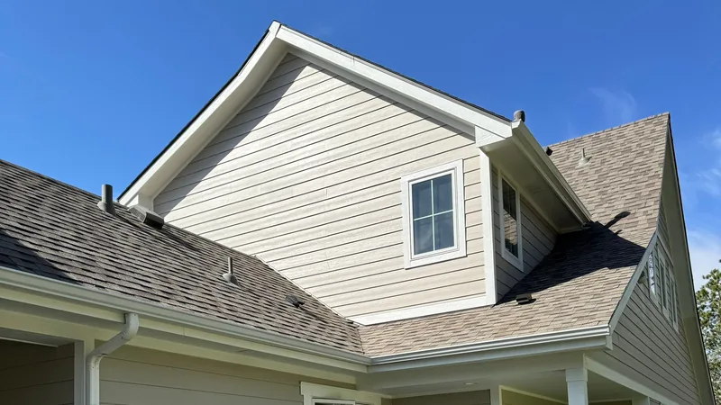

Karns, TN
Roofing in Karns, along Oak Ridge Highway
Karns mixes subdivisions with farms, pastures and small shops along Oak Ridge Highway. That means house roofs and barn roofs, and we price both.

- Free roof inspections. We look, you decide.
- Written, line-by-line prices. Every part of the job on paper.
- $15,000 to $30,000. Most asphalt shingle replacements.
- Brands you know. See the products we install.
- 24-hour emergency line. Leaks and storm damage, any hour.
Karns at a glance
- A census-designated place in northwest Knox County, about 11 miles from Knoxville, with 3,536 people at the 2020 census.
- Once called Beaver Ridge. It runs along Oak Ridge Highway (TN-62).
Source: Wikipedia, Karns, unless noted.
Houses, barns and shops
In Karns, a subdivision can sit right next to a working farm. On a house, architectural shingles are the usual pick. On a barn or a shop, metal often makes more sense: over the long run it costs less on a building with a simple roof and no finished ceiling to protect. If you want the house and an outbuilding done, we look at both on one visit and give you a separate price for each, so the barn can wait a year if the budget says so.

How barn roofs fail
Many barn and shop roofs are exposed-fastener metal, with screws driven straight through the panels. The panels can last for decades, but the rubber washers under the screws dry out and crack well before that, and each cracked washer turns into a small leak. On a barn with sound panels, swapping in fresh screws can buy years. When the panels have rusted through, or the roof leaks along the laps, it's time for replacement panels.
Permits
Karns is unincorporated. When a job needs a permit, Knox County issues it, and we find out what applies to your address before work begins. Farm buildings can follow different rules than houses, so ask before you assume either way.

Common questions
Is metal worth it on a barn I only use for storage?
Often, yes. A storage barn doesn't need the look of shingles, a simple roof is quick to panel, and metal holds up to years of sun and rain with little upkeep beyond the screws. If the barn itself is near the end of its useful life, a cheaper repair may make more sense.
Can you work around livestock?
Tell us what lives in the barn and the pasture beside it. Roofing is loud, and nails and scrap metal don't belong where animals graze, so the drop zone and the cleanup get planned with that in mind. Moving the animals out for the day is usually the simplest fix.
Is a metal roof more expensive than shingles?
Up front, usually yes. Metal costs noticeably more to install than architectural shingles, and standing seam costs more than exposed-fastener panels. In return you get a longer life and less upkeep, which matters on steep cabin roofs and for owners who plan to stay. Ask for both prices at your free inspection and compare them on paper.
Do you pull the permit?
Yes. Inside Knoxville city limits a re-roof needs a city building permit and an inspection after tear-off. Farragut, Maryville, Oak Ridge and the counties set their own rules; Farragut, for example, says a plain re-roof usually doesn't need one. We check the rule for your address and pull the permit when one is needed.
Get a free look at your Karns roof
Four boxes. We'll call you back to pick a time.
Rather talk? Call (865) 830-8126. Rather text? Send a photo.